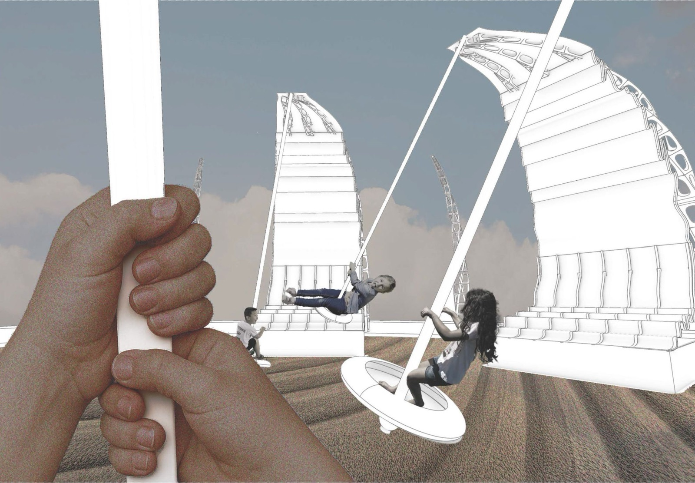
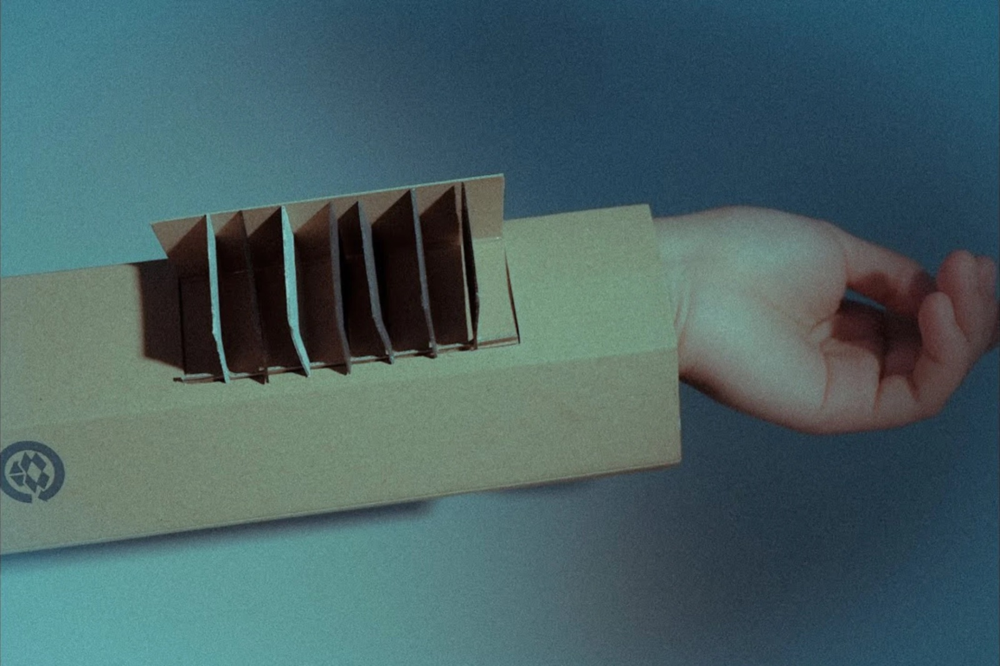

BibbleCreative Conscience
Transforming book donation into a system of circulation.
- Product Design
- Education
- Social Research
Product Designer set on making unfamiliar systems feel familiar.
Currently
Senior, Design & Technology @Parsons. Open to Summer 2027 product design internships in New York.
Previously
Demystified AI @Museum of Moving Image, branded @Parsons Mosaic, built community @Permias, marketed films @Base Entertainment.
Transforming book donation into a system of circulation.

Gamified experience on how a single sentence becomes a walkable 3D world.

Visual identity for the graduating class of DT BFA & MFA 2025 Thesis Show.
Trigger tones and light by touching elements grouped by their physical properties.
Trigger tones and light by touching elements grouped by their physical properties.
Using movement and gestures as the condition that activates plant growth within the space.

A field intervention: what one small plaza could become if the people who used it every day had a say.

A speculative act of how our memories get stored, retrieved and quietly rewritten.
A draft dialogue on the self, our mental journey, forgotten dreams and memories led by choice.
The subway, read as an ant colony.